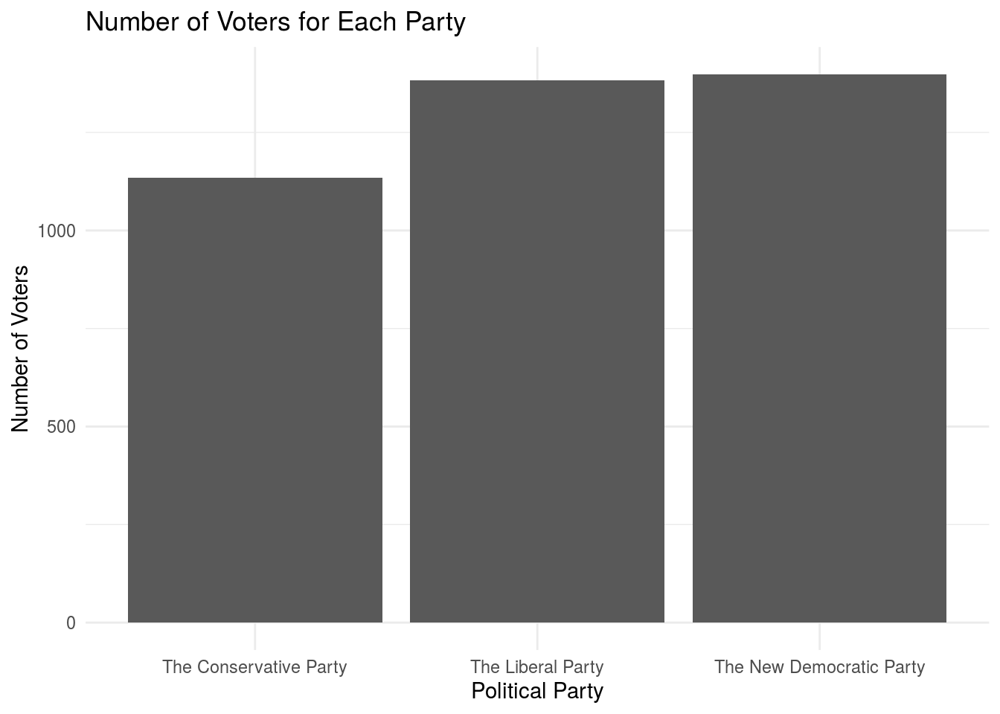
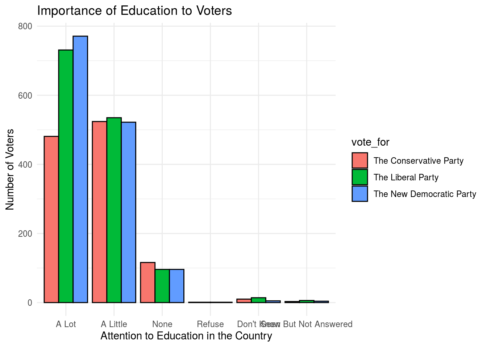
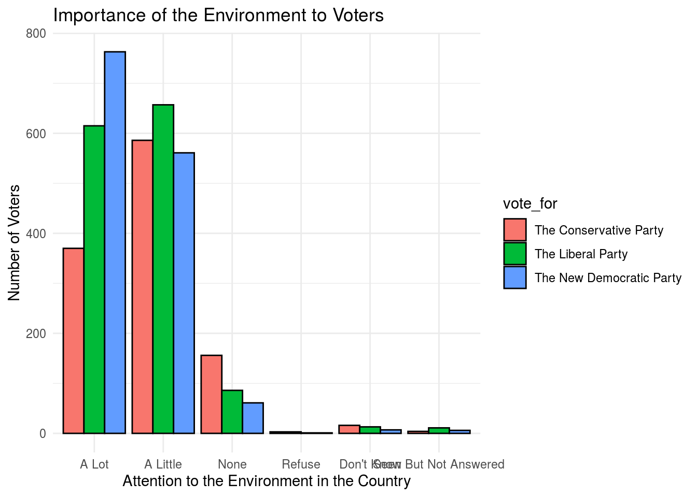
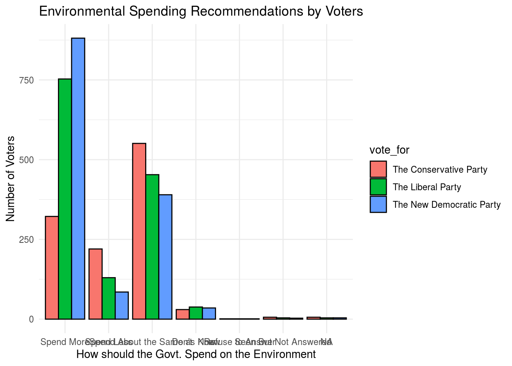
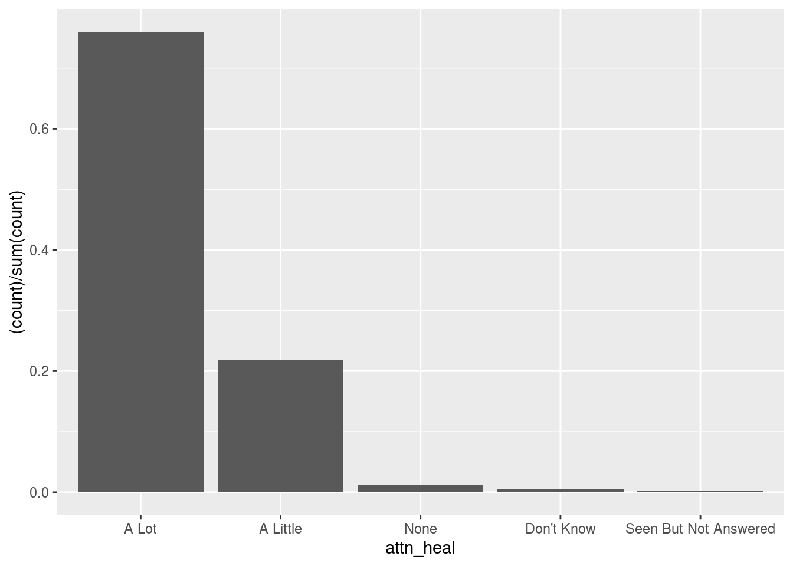
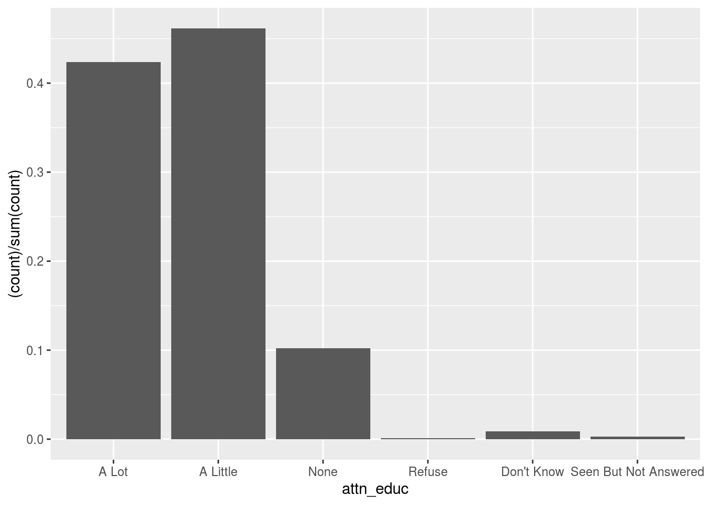

Abstract
Intro
Intro
Data
What we use
all
library(tidyverse)
library(visdat)
library(skimr)
library(cesR)
library(labelled)# devtools::install_github("hodgettsp/cesR")get_cescodes()
## index ces_survey_code get_ces_call_char
## 1 1 ces2019_web "ces2019_web"
## 2 2 ces2019_phone "ces2019_phone"
## 3 3 ces2015_web "ces2015_web"
## 4 4 ces2015_phone "ces2015_phone"
## 5 5 ces2015_combo "ces2015_combo"
## 6 6 ces2011 "ces2011"
## 7 7 ces2008 "ces2008"
## 8 8 ces2004 "ces2004"
## 9 9 ces0411 "ces0411"
## 10 10 ces0406 "ces0406"
## 11 11 ces2000 "ces2000"
## 12 12 ces1997 "ces1997"
## 13 13 ces1993 "ces1993"
## 14 14 ces1988 "ces1988"
## 15 15 ces1984 "ces1984"
## 16 16 ces1974 "ces1974"
## 17 17 ces7480 "ces7480"
## 18 18 ces72_jnjl "ces72_jnjl"
## 19 19 ces72_sep "ces72_sep"
## 20 20 ces72_nov "ces72_nov"
## 21 21 ces1968 "ces1968"
## 22 22 ces1965 "ces1965"get_ces('ces2015_web')
## TO CITE THIS SURVEY FILE: Fournier, Patrick, Fred Cutler, Stuart Soroka and Dietlind Stolle. 2015. The 2015 Canadian Election Study. [dataset]
##
## LINK: https://ces-eec.arts.ubc.ca/english-section/surveys/ces2015_web <- to_factor(ces2015_web)
head(ces2015_web)
## # A tibble: 6 x 580
## start finish survey_language duration date
## <dttm> <dttm> <fct> <chr> <date>
## 1 2015-08-18 07:39:22 2015-08-18 08:23:23 English Survey 2640 2015-08-18
## 2 2015-10-02 05:32:29 2015-10-02 05:37:35 English Survey 305 2015-10-02
## 3 2015-09-11 06:48:56 2015-09-11 07:01:56 English Survey 779 2015-09-11
## 4 2015-09-26 16:28:22 2015-09-26 16:36:48 English Survey 505 2015-09-26
## 5 2015-08-18 07:36:11 2015-08-18 07:48:13 English Survey 721 2015-08-18
## 6 2015-09-16 06:44:12 2015-09-16 06:54:05 English Survey 592 2015-09-16
## # … with 575 more variables: complete <dbl>, rdm_vote <chr>,
## # rdm_like_pos <dbl>, rdm_think_id <dbl>, rdm_iss <fct>, respID <chr>,
## # browser_name <chr>, browser_version <chr>, browser_os <chr>,
## # browser_agent <chr>, sex_r <fct>, province <fct>, demsat <fct>,
## # imp_issue_TEXT <chr>, attn_heal <fct>, attn_welf <fct>, attn_educ <fct>,
## # attn_envi <fct>, attn_crim <fct>, attn_defn <fct>, attn_immg <fct>,
## # attn_check <fct>, interest <fct>, isslist_unem <dbl>, isslist_free <dbl>,
## # isslist_mili <dbl>, isslist_hlth <dbl>, isslist_abor <dbl>,
## # isslist_corr <dbl>, isslist_terr <dbl>, isslist_sena <dbl>,
## # isslist_rate <dbl>, isslist_elec <dbl>, isslist_abol <dbl>,
## # isslist_pipe <dbl>, isslist_qsov <dbl>, isslist_envi <dbl>,
## # isslist_ppow <dbl>, isslist_debt <dbl>, isslist_taxe <dbl>,
## # isslist_immg <dbl>, isslist_gunc <dbl>, isslist_dayc <dbl>,
## # isslist_pove <dbl>, isslist_econ <dbl>, isslist_othe <dbl>,
## # isslist_othe_TEXT <chr>, isscare_unem <dbl>, isscare_free <dbl>,
## # isscare_mili <dbl>, isscare_hlth <dbl>, isscare_abor <dbl>,
## # isscare_corr <dbl>, isscare_terr <dbl>, isscare_sena <dbl>,
## # isscare_rate <dbl>, isscare_elec <dbl>, isscare_abol <dbl>,
## # isscare_pipe <dbl>, isscare_qsov <dbl>, isscare_envi <dbl>,
## # isscare_ppow <dbl>, isscare_debt <dbl>, isscare_taxe <dbl>,
## # isscare_immg <dbl>, isscare_gunc <dbl>, isscare_dayc <dbl>,
## # isscare_pove <dbl>, isscare_econ <dbl>, isscare_othe <dbl>,
## # isscare_othe_TEXT <chr>, lklytovote <fct>, vote_for <fct>, vote_oth <chr>,
## # vote_lean <fct>, vote_for_if <fct>, vtunlik_ln <fct>, voted_for <fct>,
## # voted_oth <chr>, vote_secon <fct>, notvote <fct>, sat_govt <fct>,
## # ptfeel_cons <dbl>, ptfeel_libs <dbl>, ptfeel_ndp <dbl>, ptfeel_bq <dbl>,
## # ptfeel_green <dbl>, ldrfeel_hrpr <dbl>, ldrfeel_trud <dbl>,
## # ldrfeel_mulc <dbl>, ldrfeel_ducp <dbl>, ldrfeel_may <dbl>, taxes <fct>,
## # taxes_200 <fct>, taxes_40 <fct>, taxes_corp <fct>, spnd_hlth <fct>,
## # spnd_welf <fct>, spnd_educ <fct>, spnd_envi <fct>, …ces2015_web_wrk_Con <- ces2015_web %>%
filter(vote_for == 'The Conservative Party')
ces2015_web_wrk_Lib <- ces2015_web %>%
filter(vote_for == 'The Liberal Party')
ces2015_web_wrk_Dem <- ces2015_web %>%
filter(vote_for == 'The New Democratic Party')ces2015_web_wrk_Con %>%
ggplot(aes(x = attn_educ)) +
geom_bar(aes(y = (..count..)/sum(..count..)))
ces2015_web_wrk_Lib %>%
ggplot(aes(x = attn_educ)) +
geom_bar(aes(y = (..count..)/sum(..count..)))ces2015_web_wrk_Dem %>%
ggplot(aes(x = attn_educ)) +
geom_bar(aes(y = (..count..)/sum(..count..)))ces2015_web_wrk_Con %>%
ggplot(aes(x = attn_envi)) +
geom_bar(aes(y = (..count..)/sum(..count..)))
ces2015_web_wrk_Lib %>%
ggplot(aes(x = attn_envi)) +
geom_bar(aes(y = (..count..)/sum(..count..)))ces2015_web_wrk_Dem %>%
ggplot(aes(x = attn_envi)) +
geom_bar(aes(y = (..count..)/sum(..count..)))ces2015_web_wrk_Con %>%
ggplot(aes(x = attn_immg)) +
geom_bar(aes(y = (..count..)/sum(..count..)))
ces2015_web_wrk_Lib %>%
ggplot(aes(x = attn_immg)) +
geom_bar(aes(y = (..count..)/sum(..count..)))ces2015_web_wrk_Dem %>%
ggplot(aes(x = attn_immg)) +
geom_bar(aes(y = (..count..)/sum(..count..)))ces2015_web_wrk_Con %>%
ggplot(aes(x = attn_heal)) +
geom_bar(aes(y = (..count..)/sum(..count..)))
ces2015_web_wrk_Lib %>%
ggplot(aes(x = attn_heal)) +
geom_bar(aes(y = (..count..)/sum(..count..)))ces2015_web_wrk_Dem %>%
ggplot(aes(x = attn_heal)) +
geom_bar(aes(y = (..count..)/sum(..count..)))ces2015_web_wrk_Con %>%
ggplot(aes(x = attn_crim)) +
geom_bar(aes(y = (..count..)/sum(..count..)))
ces2015_web_wrk_Lib %>%
ggplot(aes(x = attn_crim)) +
geom_bar(aes(y = (..count..)/sum(..count..)))
ces2015_web_wrk_Dem %>%
ggplot(aes(x = attn_crim)) +
geom_bar(aes(y = (..count..)/sum(..count..)))
ces2015_web_wrk_Con %>%
ggplot(aes(x = attn_defn)) +
geom_bar(aes(y = (..count..)/sum(..count..)))
ces2015_web_wrk_Lib %>%
ggplot(aes(x = attn_defn)) +
geom_bar(aes(y = (..count..)/sum(..count..)))
ces2015_web_wrk_Dem %>%
ggplot(aes(x = attn_defn)) +
geom_bar(aes(y = (..count..)/sum(..count..)))ces2015_web_wrk_Con %>%
ggplot(aes(x = p_iss_immg)) +
geom_bar(aes(y = (..count..)/sum(..count..)))
ces2015_web_wrk_Lib %>%
ggplot(aes(x = p_iss_immg)) +
geom_bar(aes(y = (..count..)/sum(..count..)))ces2015_web_wrk_Dem %>%
ggplot(aes(x = p_iss_immg)) +
geom_bar(aes(y = (..count..)/sum(..count..)))
ces2015_web_wrk_Con %>%
filter(p_pos_mino < 101) %>%
ggplot(aes(x = p_pos_mino)) +
geom_bar(aes(y = (..count..)/sum(..count..)))
ces2015_web_wrk_Lib %>%
filter(p_pos_mino < 101) %>%
ggplot(aes(x = p_pos_mino)) +
geom_bar(aes(y = (..count..)/sum(..count..)))
ces2015_web_wrk_Dem %>%
filter(p_pos_mino < 101) %>%
ggplot(aes(x = p_pos_mino)) +
geom_bar(aes(y = (..count..)/sum(..count..)))
ces2015_web_wrk_Con %>%
ggplot(aes(x = religion)) +
geom_bar(aes(y = (..count..)/sum(..count..)))
ces2015_web_wrk_Lib %>%
ggplot(aes(x = religion)) +
geom_bar(aes(y = (..count..)/sum(..count..)))
ces2015_web_wrk_Dem %>%
ggplot(aes(x = religion)) +
geom_bar(aes(y = (..count..)/sum(..count..)))
Discussion
R Markdown
This is an R Markdown document. Markdown is a simple formatting syntax for authoring HTML, PDF, and MS Word documents. For more details on using R Markdown see http://rmarkdown.rstudio.com.
You can embed an R code chunk like this:
summary(cars)
## speed dist
## Min. : 4.0 Min. : 2.00
## 1st Qu.:12.0 1st Qu.: 26.00
## Median :15.0 Median : 36.00
## Mean :15.4 Mean : 42.98
## 3rd Qu.:19.0 3rd Qu.: 56.00
## Max. :25.0 Max. :120.00
fit <- lm(dist ~ speed, data = cars)
fit
##
## Call:
## lm(formula = dist ~ speed, data = cars)
##
## Coefficients:
## (Intercept) speed
## -17.579 3.932Including Plots
You can also embed plots. See Figure 1 for example:
par(mar = c(0, 1, 0, 1))
pie(
c(280, 60, 20),
c('Sky', 'Sunny side of pyramid', 'Shady side of pyramid'),
col = c('#0292D8', '#F7EA39', '#C4B632'),
init.angle = -50, border = NA
)
Figure 1: A fancy pie chart.